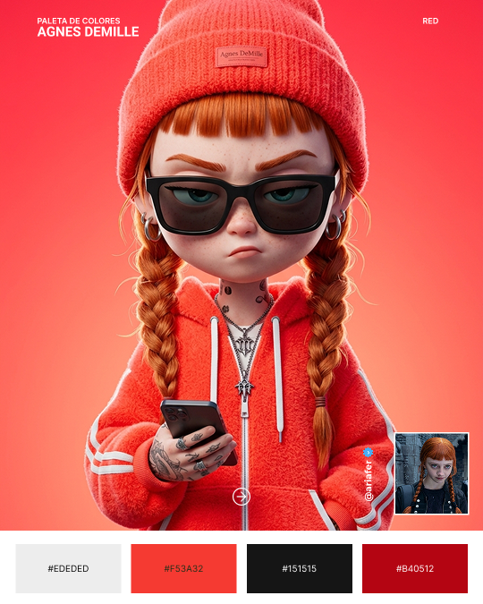
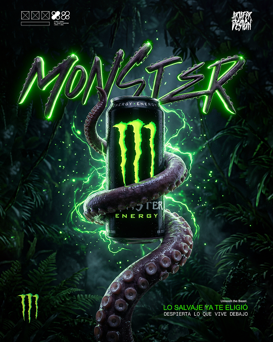

VS Code
Primary Stack
11 tools

React

Figma
Affinity
Illustrator
Photoshop

DaVinci

CapCut

Tailwind CSS

Sass

Blender
VS Code
React
Figma
Affinity
Illustrator
Photoshop
DaVinci
CapCut
Tailwind CSS
Sass
Blender
GALERÍA CREATIVA
Una colección de proyectos donde la inteligencia artificial impulsa la creatividad, mientras la dirección de arte, la composición y el diseño convierten cada concepto en una pieza visual única.

01
Agnes
3D Art
Modelado tridimensional con iluminación estudiada y acabado digital de alto impacto visual.

02
Energy
Monster
Composición oscura con detalles agresivos y un estilo visual que rompe lo convencional.
01
Experiencia
2026— hoy
UX/UI Designer + AI
Freelance · Actualidad
Diseño experiencias digitales centradas en el usuario para aplicaciones, sitios web y productos digitales. Integro herramientas de inteligencia artificial para crear artes visuales, explorar conceptos creativos y optimizar flujos de trabajo.
- Desarrollé interfaces web y móviles priorizando usabilidad, accesibilidad y coherencia visual.
- Creé wireframes, prototipos y sistemas de diseño en Figma.
- Integré IA generativa al proceso creativo, reduciendo los tiempos de producción visual en ~70%.
2025— 2023
WabiSabi
Graphic Designer
Fui responsable del desarrollo visual de la marca, diseñando piezas gráficas y produciendo contenido audiovisual para redes sociales y campañas digitales. Combiné diseño, fotografía y edición de video para mantener una comunicación visual coherente y atractiva en todos los canales.
- Diseñé la identidad visual de la marca y piezas gráficas para campañas, redes sociales y material promocional.
- Planifiqué, grabé y edité videos de productos para contenido orgánico y publicitario.
- Desarrollé recursos gráficos alineados con los lineamientos de la marca, garantizando consistencia visual en cada pieza.
- Colaboré en la creación de contenido estratégico para fortalecer la presencia digital de la marca.
2017— 2022
Lic. en Diseño Gráfico y Comunicación Visual
Universidad Mayor de San Simón · Cochabamba
Donde empezó todo: cinco años formando las bases de tipografía, color, composición y teoría de la comunicación visual que hoy sostienen mi forma de diseñar interfaces y contenido con IA.
- Proyecto de grado enfocado en Colores para Daltónicos desarrollo una website que permita informar y guiar en el tema de percepción del color a diseñadores y desarrolladores de website, mejorando así la experiencia en personas daltónicas dentro de la interfaz gráfica.
- Base teórica en semiótica y comunicación que hoy aplico al diseño de producto.
Proyectos seleccionados
Sobre mí
Diseño interfaces con la misma lógica con la que escribo prompts: claridad primero, estética después.
Soy Ariafer, desde Cochabamba, Bolivia. Me apasiona fusionar el diseño centrado en el usuario con las nuevas tecnologías de inteligencia artificial para crear piezas visuales que destacan.
Mi enfoque está en el diseño de impacto: crear experiencias que no solo se vean bien, sino que comuniquen el mensaje correcto de forma eficiente e innovadora.
+3
años de
experiencia
experiencia
IA
diseño de
impacto visual
impacto visual
BO
basado en
Cochabamba
Cochabamba